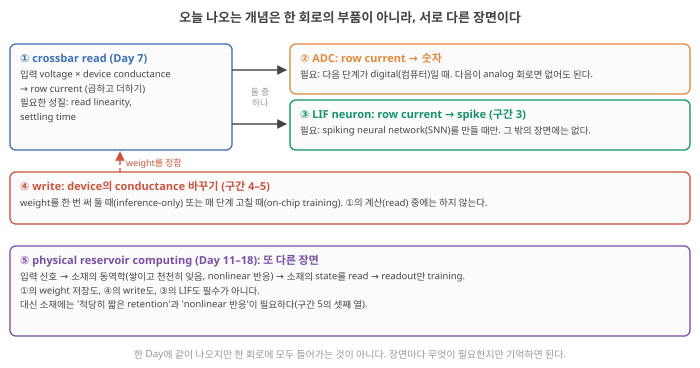
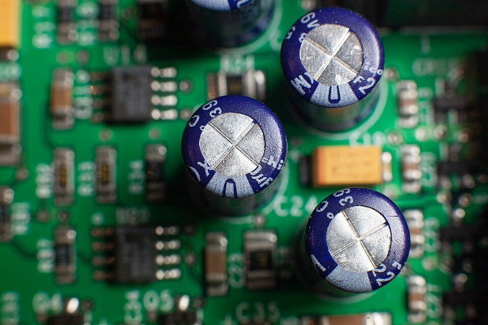
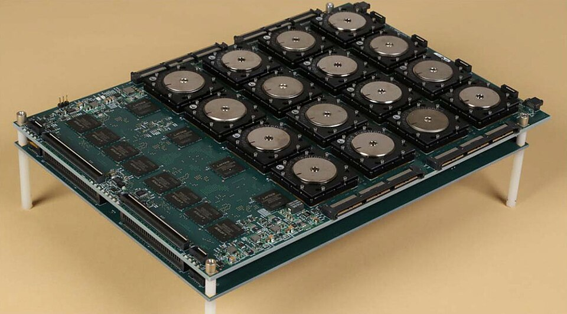

Day 8. LIF neuron 회로, synapse device spec, peripheral circuits
Phase 1 · 왜 뉴로모픽 컴퓨팅인가
이번 질문 crossbar row의 current를 neuron 회로가 받으면 무슨 일이 일어나고, crossbar의 각 칸에 들어갈 synapse device는 무엇을 잘해야 하나?
왜 배우나 ionic device 논문의 주장마다 어느 측정을 봐야 하는지 판단한다.
오늘의 장면 입력 current → capacitor에 charge 축적 → threshold에서 spike → reset
write 펄스 → conductance 변화 → read로 읽기
오늘 반드시 LIF = capacitor + resistor + threshold switch, 일정 입력은 I × R에서 멈춘다. synapse spec의 기준은 용도마다 다르다.
나중에 봐도 됨 decay factor 정확한 식 · RMS error · 리뷰의 지표 분류 · 전력 비율
넘어가는 기준 '오늘 반드시'를 내 말로 말할 수 있으면 충분합니다.
이후 쓰이는 곳 Day 15–16 fading memory · Day 39–40 내 소재의 τ · Day 23–24 retention 정의 · Day 31–32 system energy
지난 학습 복습
지난 학습 단위(Day 7 · crossbar로 행렬–벡터 곱하기)의 핵심을 다른 예로 확인합니다. 고르는 즉시 맞았는지와 이유가 보입니다. 틀려도 아래 학습자료는 그대로 열려 있고, 틀린 문제에는 다시 볼 곳이 붙습니다.
학습자료
학습 구간 3. LIF neuron을 회로로: capacitor, resistor, threshold
오늘 답하려는 질문. 내 ionic 소재가 "neuron처럼 integrate하고 leak한다", "synapse device로 쓸 수 있다"고 말하려면, 무엇을 재고 무엇을 확인해야 하나?
이 질문이 소재 연구에 왜 필요한가. ionic device 논문의 흔한 주장 세 가지가 오늘 내용으로 판단됩니다.
- "neuron처럼 integrate·leak한다" → 일정한 current를 넣었을 때 voltage가 오르다 멈추는 곡선과 그 빠르기 τ를 봐야 한다(구간 3).
- "synapse로 쓸 수 있다" → I–V curve와 펄스 응답(LTP/LTD curve)을 봐야 하고, 용도마다 기준이 다르다(구간 4–5).
- "spike당 fJ" → device 하나의 energy인지, system 전체의 energy인지 봐야 한다(구간 6).
끝나면 판단할 수 있는 것.
- 소재에 일정한 current를 넣은 응답 곡선을 보고 τ와 stop value를 읽고, neuron으로 fire할 조건을 말한다.
- I–V curve와 LTP/LTD curve를 보고 어느 용도(inference, on-chip training, reservoir computing)에 맞는지 말한다.
- 논문의 energy 숫자가 무엇을 세었는지 말한다.
오늘의 지도. Day 7부터 오늘까지 개념이 많이 나왔습니다. 이것들은 한 회로에 모두 들어가는 부품이 아닙니다. 서로 다른 장면입니다.

| 구간 | 장면 | 한 줄 질문 |
|---|---|---|
| 3 | ③ LIF neuron | Row current를 neuron 회로가 받으면 무슨 일이 일어나나? |
| 4 | ④ write와 ① read | Device가 weight로 쓰이려면 read와 write가 어떠해야 하나? |
| 5 | ④와 ⑤ | 써 둔 값이 얼마나 오래·몇 번이나·얼마나 고르게 버티나? 용도마다 기준은? |
| 6 | ①②의 바깥 | Device 바깥 회로는 얼마나 비싼가? |
약어 주의. 이 사이트에서 RC는 보통 reservoir computing입니다. 오늘은 resistor(R)와 capacitor(C)로 된 회로도 나옵니다. 그래서 오늘은 reservoir computing을 줄이지 않고 다 쓰고, 회로는 R–C circuit이라고 씁니다.
완벽하지 않아도 됩니다. 오늘 반드시 가져갈 것은 이 두 문장뿐입니다.
- LIF neuron은 capacitor(쌓기) + resistor(새기) + threshold switch(fire & reset)이고, 일정한 입력은 stop value I × R에서 멈춘다.
- Synapse device는 read와 write가 다른 일이고, 좋은 숫자의 기준은 용도(inference, on-chip training, reservoir computing)마다 다르다.
접힌 '심화'와 원문 그림 해설은 나중에 논문을 읽다가 필요할 때 펼쳐도 됩니다.
3-1. 실험 질문과 그림 먼저: 쌓이고 새는 회로
상황. 내 hydrogel device 양끝에 일정한 current 40 nA를 흘리며 voltage를 잰다고 합시다. Voltage는 오르다가 어느 값에 다가가며 점점 느려지고, current를 끊으면 천천히 내려갑니다. 이 곡선이 "neuron 같다"는 말의 출발점입니다. 그런데 neuron이라고 부르려면 무엇이 더 있어야 할까요?
회로와 곡선부터. 그림 6(a)는 이 동작을 하는 가장 단순한 회로, (b)는 그 회로의 voltage가 시간에 따라 변하는 모습입니다. 아래 번호대로 (a)와 (b)를 짝지어 보세요.

- 왼쪽 주황 화살표 = 입력 current \(I(t)\). (b) 맨 아래 주황 막대 = 그 크기(0–0.2 s는 12 nA, 0.2–0.4 s는 40 nA, 그 뒤는 0).
- 파란 점 = 회로 안에 쌓인 값 \(V\)(membrane potential). (b) 파란 곡선 = 그 \(V\)의 시간 변화(세로축 V, 가로축 s).
- 초록 C(capacitor) = charge를 담는 그릇. → (b) 곡선이 오르는 이유.
- 빨강 R(resistor) = charge가 새는 길. → (b) 오르는 속도가 점점 줄고, 0.4 s 뒤 입력이 없을 때 천천히 내려가는 이유.
- 오른쪽 상자 = threshold switch. → (b) 곡선이 빨간 점선(0.5 V)에 닿는 순간의 초록 세로선(spike)과, 곡선이 0으로 뚝 떨어지는 것(reset).
입력 → 내부 변화 → 출력.
- 입력: current \(I(t)\), 단위 A.
- 내부 변화: capacitor에 charge가 쌓이고(그래서 \(V\)가 오르고), 동시에 resistor로 샌다(그래서 \(V\)가 내려간다).
- 출력: \(V\)가 threshold에 닿을 때마다 spike 하나. Neuron이 내보내는 정보는 spike의 개수와 시각이다.
상황의 hydrogel 곡선에는 2–4번(쌓이고 새는 것)은 있지만 5번(threshold에서 spike와 reset)이 없습니다. Neuron이라고 부르려면 5번을 맡는 부품이 더 필요합니다(아래 threshold switching과 hydrogel LIF neuron에서).
LIF 회로의 부품과 용어. 모두 그림 6(a)의 부품에 하나씩 짝지어집니다.
- Integrate: 들어온 입력을 계속 더해 두는 일. Capacitor가 한다.
- Leak: 더해 둔 값이 저절로 조금씩 새는 일. 그래서 오래된 입력은 잊힌다. Resistor가 한다.
- Fire & reset: 값이 threshold에 닿으면 spike를 내고(fire), 값을 0으로 되돌리는(reset) 일. Threshold switch가 한다.
- Membrane potential \(V\): neuron 안에 쌓인 값. 회로에서는 capacitor의 voltage. (생물 neuron의 membrane potential에서 온 이름)
- Threshold \(V_{th}\): fire가 일어나는 voltage. 오늘 예에서는 0.5 V.
Capacitor와 resistor를 숫자로.
- Capacitor: charge \(Q\)를 넣으면 voltage가 \(V = Q / C\)만큼 오른다. 예: \(C\) = 1 nF에 40 nA를 5 ms 동안 넣으면 \(Q\) = 40×10⁻⁹ A × 5×10⁻³ s = 0.2 nC, 그래서 \(V\)는 0.2 V 오른다.
- Resistor: 새는 current는 Ohm's law로 \(V / R\). 예: \(R\) = 20 MΩ, \(V\) = 0.5 V이면 25 nA가 샌다. \(V\)가 높을수록 더 빨리 샌다.
가장 간단한 식: 축적 = 유입 − 유출. 화공의 물질 수지(mass balance)와 같은 꼴입니다.
\[ \text{(쌓인 charge의 변화)} = (\underbrace{I}_{\text{유입}} - \underbrace{V/R}_{\text{유출}}) \times \Delta t \quad\Rightarrow\quad \Delta V = \frac{(I - V/R)\,\Delta t}{C} \]
출구 유량이 수위에 비례하는 탱크를 떠올리면 됩니다. 붓는 양이 \(I\), 수위가 \(V\), 탱크 단면적이 \(C\), 출구가 물을 잘 안 내보내는 정도가 \(R\)입니다. 수위가 오를수록 출구로 더 많이 빠져, 붓는 양과 빠지는 양이 같아지는 수위에서 멈춥니다. 탱크에는 "threshold에서 한꺼번에 비우기"가 없다는 점만 다릅니다.
Time constant τ. \(R\)과 \(C\)를 곱한 값이 이 회로의 빠르기를 정합니다. 화공의 체류 시간(residence time)과 같은 역할입니다.
\[ \tau = R \times C = 20 \times 10^6\ \Omega \times 1 \times 10^{-9}\ \text{F} = 0.02\ \text{s} = 20\ \text{ms} \]
\(R\)이 크거나(출구가 좁거나) \(C\)가 크면(탱크가 넓으면) τ가 길어지고, neuron은 입력을 오래 기억합니다.
3-2. 예제 하나를 끝까지: 40 nA는 fire하고, 12 nA는 안 한다
계산 방법: 5 ms마다 장부 쓰기. 바로 위의 식 \(\Delta V = (I - V/R)\,\Delta t / C\)(축적 = 유입 − 유출)를 5 ms 칸으로 나눠, 칸마다 "들어온 것"과 "새어 나간 것"을 적습니다.
- in = \(I \times \Delta t / C\). 40 nA면 40 nA × 5 ms ÷ 1 nF = 0.2 V.
- Out = \((V/R) \times \Delta t / C = V \times \Delta t / \tau\). 여기서는 \(\Delta t / \tau\) = 5 ms ÷ 20 ms = 0.25이므로 out = 0.25 × V.
- 다음 \(V\) = 지금 \(V\) + in − out.
입력 40 nA일 때.
| 시각 | 지금 \(V\) | in | Out (0.25 × V) | 다음 \(V\) |
|---|---|---|---|---|
| 0 ms | 0 | +0.2 | −0 | 0.2 V |
| 5 ms | 0.2 | +0.2 | −0.05 | 0.35 V |
| 10 ms | 0.35 | +0.2 | −0.09 | 0.46 V |
| 15 ms | 0.46 | +0.2 | −0.12 | 0.55 V → threshold 0.5 V를 넘음 |
20 ms 무렵 threshold를 넘으므로 spike를 하나 내고 \(V\)를 0으로 되돌립니다(reset). 그다음 같은 장부가 처음부터 되풀이되어 약 20 ms마다 spike가 납니다. 그래서 40 nA를 넣는 0.2–0.4 s 동안 spike가 약 10개 섭니다(바로 아래 다시 보기 그림의 (b)).
이 표는 5 ms 칸으로 어림한 것입니다. 그래프는 0.1 ms 칸으로 계산해 약 19.6 ms가 나오고, 결론은 같습니다 Claude 계산.
입력 12 nA일 때: 어디서 멈추나. 이번에는 in = 12 nA × 5 ms ÷ 1 nF = 0.06 V입니다. \(V\)가 오를수록 out(0.25 × V)이 커지므로, 언젠가 in과 out이 같아집니다.
- in = out → 0.06 = 0.25 × V → V = 0.24 V에서 더 오르지 않습니다.
- Current로 말하면: 유입(12 nA) = 유출(\(V/R\))일 때 멈춘다. 그래서 \(V = I \times R\) = 12 nA × 20 MΩ = 0.24 V.
이 값을 stop value라고 부르겠습니다(위 다시 보기 그림 (b)의 회색 점선, 교과서에서는 steady-state voltage). 0.24 V는 threshold 0.5 V보다 낮으므로, 12 nA를 아무리 오래 넣어도 spike가 나지 않습니다.
Fire하는지는 "stop value \(I \times R\)가 \(V_{th}\)보다 큰가"로 정해집니다. 40 nA의 stop value는 40 nA × 20 MΩ = 0.8 V로 threshold보다 높습니다. 그래서 0.8 V를 향해 오르다가 0.5 V에서 먼저 fire합니다.
입력이 끊기면 (0.4 s 이후). in = 0이므로 out만 남아 \(V\)가 서서히 내려갑니다. 갑자기 0이 되는 것은 fire 뒤의 reset뿐입니다.
예전에 본 계산 규칙과 같은 꼴. 위 장부를 한 줄로 쓰면 "다음 \(V\) = 0.75 × 지금 \(V\) + 0.2"입니다. Day 5–6에서는 LIF neuron을 "다음 값 = 0.9 × 지금 값 + 6 mV × (그 1 ms 동안 들어온 spike 수)"라는 규칙으로 계산했습니다. 기억나지 않아도 괜찮습니다. 두 규칙이 같은 꼴이라는 것만 보면 됩니다.
- 앞의 수(0.75, 0.9)는 한 칸 뒤에 남는 비율, 곧 decay factor입니다. Resistor의 leak에서 나옵니다.
- 뒤의 수(0.2 V, 6 mV)는 한 칸 동안 들어온 양입니다. Capacitor에 쌓인 charge ÷ \(C\)에서 나옵니다. 예: \(C\) = 1 nF라면 그 규칙의 "spike 하나 = +6 mV"는 spike 하나가 6 pC(= 6 mV × 1 nF)의 charge를 넣는 것과 같습니다.
내 연구와의 연결. 내 소재에 일정한 current(또는 voltage) 계단을 주고 응답을 재면, 그 곡선에서 stop value와 τ를 읽을 수 있습니다. 그것만으로는 "쌓이고 새는 소재"이고, neuron이 되려면 threshold에서 fire & reset하는 무언가가 더 있어야 합니다.
3-3. 비슷해 보이는 네 가지: τ, settling time, Δt, decay factor
왜 따로 보나. 이 넷은 모두 "시간"과 관련되어 섞이기 쉽습니다. 하지만 누가 정하는지가 다릅니다. 하나씩 봅니다.
① τ (time constant): 소재·회로가 정한다. R × C로 정해지는 물리량입니다. 계단 입력을 주면 1τ 뒤에 stop value의 63%에 닿습니다. 앞의 예제 neuron은 τ = 20 ms입니다.
| 지난 시간 | 1τ | 2τ | 3τ | 5τ |
|---|---|---|---|---|
| Stop value의 몇 %에 도달 | 63% | 86% | 95% | 99% |
예: 40 nA의 stop value는 0.8 V. 1τ(20 ms) 뒤에는 0.8 × 63% ≈ 0.50 V입니다. 그래서 위의 5 ms 장부에서도 약 20 ms에 threshold 0.5 V에 닿았습니다.
② settling time: τ로 계산하는 "기다릴 시간". R–C circuit이 최종값에 거의(보통 99%, 곧 5τ) 닿는 데 걸리는 시간입니다. Day 7의 crossbar에서 row 끝의 TIA(row current를 voltage로 바꿔 주는 읽기 회로)의 출력도 R–C circuit처럼 최종값으로 다가갔습니다. Feedback resistor \(R_f\) = 1 MΩ, 배선 \(C\) = 1 pF라면 τ = 1 µs이고, settling time은 5τ = 5 µs입니다. ADC는 그 뒤에 읽어야 맞는 값을 얻습니다.
같은 R–C 물리인데 쓰임이 반대입니다. Crossbar는 빨리 답을 내야 하므로 τ가 짧을수록(µs) 좋고, neuron은 최근 입력을 기억해야 하므로 τ가 길어야(ms) 합니다.
③ Δt (계산 간격): 내가 고른다. 위 장부는 5 ms마다 한 줄씩 썼습니다. 1 ms마다 쓸 수도 있습니다. 이 간격 Δt는 소재의 성질이 아니라 계산(또는 측정 sampling)의 간격입니다.
④ decay factor: τ와 Δt 둘 다가 정한다. 한 칸(Δt) 뒤에 남는 비율입니다. 같은 neuron이라도 Δt를 바꾸면 달라집니다.
작은 예: 어떤 neuron이 입력 없이 1 ms가 지나면 값의 90%가 남는다고 합시다(decay factor 0.9). 처음 값을 100 mV로 두고 입력 없이 지켜봅니다.
- 1 ms 뒤: 100 × 0.9 = 90 mV
- 2 ms 뒤: 90 × 0.9 = 81 mV
두 번째 1 ms 동안 새는 양은 처음 값(100)의 10%가 아니라 그때 남은 값(90)의 10%, 곧 9 mV입니다. 그래서 80이 아니라 81입니다. 2 ms마다 계산하면 decay factor는 0.9 × 0.9 = 0.81입니다.
| τ = 20 ms인 neuron(앞의 예제) | Δt = 1 ms | Δt = 2 ms | Δt = 5 ms |
|---|---|---|---|
| Decay factor (남는 비율) | 0.951 | 0.951 × 0.951 = 0.905 | 0.951을 다섯 번 곱한 0.779 |
위 5 ms 장부에서 쓴 0.75는 이 0.779의 어림값입니다. Δt가 τ보다 훨씬 짧을수록 어림이 정확해집니다 Claude 계산.
네 가지를 한 표로.
| 이름 | 무엇인가 | 누가 정하나 | 단위 | 예 |
|---|---|---|---|---|
| τ (time constant) | 쌓이고 새는 빠르기 | 소재·회로 (R × C) | s | 20 ms |
| Settling time | 최종값의 99%까지 기다릴 시간 | τ (약 5τ) | s | 5 µs (crossbar) |
| Δt | 계산·sampling 간격 | 나 | s | 1 ms, 5 ms |
| Decay factor | 한 칸 뒤 남는 비율 | τ와 Δt | 없음 | 0.9 (Δt = 1 ms) |
Decay factor만으로는 소재의 빠르기를 말할 수 없습니다. 논문에 "decay factor 0.9"가 나오면 Δt를 함께 찾고, 소재의 빠르기는 τ로 말합니다.
그리고 integrate·leak·fire·reset은 이 넷과 종류가 다릅니다. 앞의 넷은 "숫자"이고, integrate·leak·fire·reset은 회로가 하는 "일"입니다. τ는 그중 leak가 얼마나 빠른지를 정하는 숫자입니다.
내 연구와의 연결. 내 소재의 τ는 계단 입력을 준 뒤 응답이 63%에 닿는 시간(또는 입력을 끊은 뒤 37%로 떨어지는 시간)으로 잽니다. Day 39–40에서 이 τ가 소재의 두께·확산계수와 어떻게 이어지는지 봅니다.
심화 · decay factor의 정확한 식과 leak rate
입력이 없을 때 \(V\)는 \(V(t) = V_0\, e^{-t/\tau}\)로 줄어듭니다(\(V_0\): 처음 값). 그래서 Δt마다 끊어 보면 매번 같은 수 \(e^{-\Delta t/\tau}\)가 곱해지고, 이것이 decay factor입니다. 예: \(e^{-1/20}\) = 0.951. Δt를 두 배로 하면 \(e^{-2\Delta t/\tau} = (e^{-\Delta t/\tau})^2\), 곧 제곱이 됩니다(위의 0.9 → 0.81).
Leak rate \(1/\tau\)(단위 1/s)는 "아주 짧은 시간 동안 지금 값의 몇 분의 몇이 빠지나"를 나타냅니다. τ = 20 ms면 50 /s이고, 0.1 ms 동안 지금 값의 약 0.5%(= 50 /s × 0.0001 s)가 빠진다는 뜻입니다. "1초에 50%"라는 뜻이 아닙니다.
회로 식으로 쓰면 \(C\,\frac{dV}{dt} = I(t) - \frac{V}{R}\)입니다. 앞의 "축적 = 유입 − 유출"을 아주 짧은 시간으로 쓴 것입니다. Reservoir computing의 leaky node 식 \(x \leftarrow d \cdot x + (1-d) \cdot u\)(Day 15–16)에서 \(d\)도 같은 뜻의 "남는 비율"이고, 여기서 ←는 "오른쪽을 계산해 왼쪽에 새로 넣는다"는 계산 표기입니다.
선택 영상(링크). R–C circuit이 처음이라면: The Engineering Mindset, "Capacitor charge time calculation - time constants" (약 6분, 영어). τ = R × C와 "5τ면 거의 다 참"을 그림으로 보여 줍니다. 영상 내용 미검증
3-4. 실제 device로: threshold switching과 hydrogel LIF neuron
왜 이 예를 보나. LIF neuron의 세 부품(capacitor = integrate, resistor = leak, threshold switch = fire & reset) 중 capacitor와 resistor는 전자제품 어디에나 있는 흔한 부품입니다(아래 사진). 새 소재가 맡을 수 있는 자리는 주로 threshold switch, 또는 소재의 ion 동역학 자체가 integrate·leak를 맡는 경우입니다. 내 분야(ionic hydrogel)에서 실제로 LIF neuron을 만든 논문을 보고, 어느 부품을 소재가 맡았는지 가려 봅니다. 논문을 읽을 때 늘 던질 질문입니다.


Memristor, non-volatile, volatile의 뜻.
- Memristor: 지나간 voltage·current에 따라 resistance가 바뀌고 그 값을 기억하는 두 단자 device(Day 7).
- Non-volatile: 전원을 꺼도, voltage를 내려도 바뀐 resistance가 남는다. Synapse의 weight 저장에 쓴다.
- Volatile: voltage를 내리면 저절로 원래 상태로 돌아간다. Threshold switching device가 이런 종류다. 이 device에는 voltage 기준이 둘 있다.
- \(V_{th}\) (threshold voltage, 켜지는 voltage): 이 값을 넘으면 갑자기 resistance가 낮아져 current가 확 흐른다(켜짐).
- \(V_{hold}\) (hold voltage, 꺼지는 voltage): 켜진 뒤 voltage가 이 값 아래로 내려가면 저절로 높은 resistance로 돌아간다(꺼짐).
- 그래서 "threshold에서 켜져 charge를 한꺼번에 흘려보내고(fire), 비워지면 저절로 꺼지는(reset)" LIF의 스위치 역할에 딱 맞는다.
Lan 2026의 hydrogel LIF neuron. 폴더의 Lan 2026(Adv. Mater.)은 PAAm/PVA/Ag nanoflake hydrogel 하나로 두 가지 device를 만들었습니다. PVA 함량을 바꿔 non-volatile analog memristor(synapse 역할)와 volatile threshold switching memristor(fire & reset 역할)를 얻었습니다 Lan 2026, p.5, 7.
이 둘을 외부 capacitor(1 µF)·resistor(100 Ω)와 이어 LIF neuron을 만들었습니다. Threshold switching device는 0.56 V에서 켜지고(\(V_{th}\)), 0.11 V 아래에서 꺼집니다(\(V_{hold}\)) Lan 2026, p.5, 7, Fig. 5.
LIF가 하는 세 가지 일과 짝짓기. LIF neuron의 일마다, 그 일을 맡는 부품과 이 논문에서 실제로 그 자리에 들어간 것을 나란히 놓았습니다.
| LIF가 하는 일 | 그 일을 맡는 부품 | Lan 2026에서 그 자리에 들어간 것 |
|---|---|---|
| Integrate | Capacitor | 외부 capacitor 1 µF (hydrogel이 아님) |
| Fire & reset | Threshold switch | Hydrogel threshold switching memristor |
| 입력 세기 조절 | (synapse) | Hydrogel analog memristor (capacitor로 가는 길에 직렬) |
Lan 2026에서 integrate를 하는 것은 hydrogel의 ion 동역학이 아니라 외부 capacitor입니다. Hydrogel의 threshold switching도 ion이 polymer 속에 쌓였다 빠지는 현상이 아니라, Ag⁺ ion이 움직여 Ag 금속 경로(filament)가 전극 사이에 생겼다 끊어지는 현상입니다 Lan 2026, p.4 해석.
이것이 이 논문의 잘못은 아닙니다. 다만 "ionic 소재가 neuron의 integrate를 한다"를 보이려면, 외부 capacitor 없이 소재 안의 ion 축적(예: interface의 charge, depletion층)이 그 일을 해야 합니다. 그것이 내 연구 질문 후보가 됩니다.
Energy 숫자 읽기. 저자들은 spike 하나의 energy를 0.6 V × 40 µA × 30 µs = 0.72 nJ로 계산했습니다 Lan 2026, p.7. 이것은 threshold switching device에 걸린 voltage × current × 시간, 곧 device energy입니다. Capacitor를 채우는 energy와 측정 회로의 energy는 들어 있지 않습니다(device energy와 system energy의 차이는 이 Day의 마지막 구간에서 봅니다).

심화 · 리뷰는 self-reset LIF neuron을 어떻게 설명하나
Roadmap은 volatile memristor(작동 원리에 따라 redox-diffusive, Mott, OTS 등으로 나뉨)에 capacitor와 resistor를 붙여 self-reset LIF neuron을 만들면 주변 회로가 단순해진다고 씁니다. 이 구성에서 병렬 capacitor의 voltage가 membrane potential이고, volatile device가 threshold를 넘으면 급히 current를 흘리며(fire), device의 relaxation이 leak를 맡습니다. ★ Integrate의 time constant는 device의 relaxation을 설계하거나 외부 capacitor를 더해 조절합니다 Roadmap 2026, p.8116. Roadmap은 "ion 축적 = integration, 역확산 = leak"이라는 대응도 같은 맥락에서 씁니다 Roadmap 2026, p.8108.
3-5. SNN 한 층: crossbar + LIF neuron
왜 보나. 지금까지 crossbar(Day 7: device마다 곱하고 row에서 더하는 격자)와 LIF neuron(이 구간 앞부분)을 따로 봤습니다. 둘을 이으면 spiking neural network(SNN)의 한 층이 됩니다. SNN chip 논문의 그림이 대개 이 구조입니다.
1. 입력 spike 도착. 어느 입력에 spike가 오면 그 column에만 짧은 voltage 펄스가 걸린다. Spike가 없는 column은 조용하다(event-driven, "무엇이 계산을 시작시키는가").
2. Weight 곱하기. 펄스가 걸린 column의 device들이 각자 conductance만큼 current를 row로 흘린다(Ohm's law). 한 row에 모인 current가 그 neuron의 입력 I(t)다(Kirchhoff). Row 하나가 neuron 하나에 이어진다.
3. Integrate & leak. Current가 capacitor에 쌓이고(V 상승), 동시에 resistor로 샌다(V 하강). 쌓이다 멈추는 곡선이 여기서 생긴다.
4. Fire & reset. V가 threshold를 넘으면 threshold switching device가 켜져 capacitor가 방전되고(spike), 다음 층으로 spike를 보낸 뒤 V는 0 근처로 돌아간다.

Day 7의 crossbar와 다른 점은 둘입니다. 입력이 "값"이 아니라 "사건(spike)"이고, neuron이 integrate·leak·fire라는 시간에 따른 변화를 갖습니다.
심화 · row를 neuron에 이을 때의 조건, TIA와 LIF의 닮은 점, SNN chip의 energy 숫자
Row 전위. Day 7에서는 TIA가 row를 0 V로 붙들었습니다. Row를 neuron의 capacitor에 그대로 이으면 row 전위가 membrane potential \(V\)만큼 올라가, 각 device에는 \(V_i\) 대신 \(V_i - V\)가 걸리고 곱셈이 틀어집니다(Day 7: row 전위가 0 V여야 곱셈이 맞다는 조건). 그래서 row를 0 V에 붙든 채 current만 받아 capacitor에 쌓는 회로를 쓰거나, membrane potential을 입력 펄스보다 훨씬 작은 범위에서 씁니다 해석.
TIA와 LIF. Day 7의 읽기 회로 TIA(feedback 자리에 \(R_f\)와 \(C\)를 나란히 단 증폭기)는 LIF의 회로와 모양이 같습니다. 다른 것은 τ입니다. Crossbar에서는 τ를 µs로 짧게 해 "지금의 current"를 읽고, neuron으로 쓰려면 τ를 수십 ms로 길게 해 "최근 current의 누적"을 읽고 threshold·reset을 붙입니다 [해석, 회로 원리].
Energy 숫자. Roadmap은 RRAM(memristor의 한 종류) synapse와 analog integrate-and-fire neuron으로 만든 SNN chip이 MNIST(0–9 손글씨 숫자 그림을 분류하는 표준 task)에서 synapse와 neuron을 합쳐 spike당 3.6 pJ를 보였다고 씁니다 Roadmap 2026, p.8135. Day 1–2에서 본 대로, 이 수치와 생물 neuron의 수십 pJ/spike는 같은 기준이 아닙니다.
- LIF (leaky integrate-and-fire) neuron
- 입력을 integrate하고, leak로 조금씩 잊고, threshold에서 fire한 뒤 reset하는 가장 단순한 neuron 모형. 회로로는 capacitor(integrate) + resistor(leak) + threshold switch(fire & reset).
- Membrane potential \(V\)
- neuron 안에 쌓인 값. 회로에서는 capacitor의 voltage.
- Time constant τ = R × C
- R–C circuit의 빠르기. 1τ 동안 stop value의 63%까지 오르거나, 입력이 없으면 처음 값의 37%로 줄어든다.
- Stop value \(I \times R\)
- 일정한 입력 current에서 들어오는 current와 새는 current가 같아져 \(V\)가 멈추는 값. 이것이 \(V_{th}\)보다 커야 fire한다. (이 페이지에서 쓰는 이름. 교과서에서는 steady-state voltage)
- Decay factor
- 계산 한 칸(Δt) 뒤에 남는 비율. Δt에 따라 다르다(1 ms에 0.9면 2 ms에는 0.9 × 0.9 = 0.81).
- Settling time
- R–C circuit이 최종값에 거의(예: 99%, 5τ) 닿는 데 걸리는 시간. Crossbar 출력을 언제 읽을 수 있는지 정한다.
- Threshold switching device (volatile)
- voltage가 켜지는 값 \(V_{th}\)를 넘으면 갑자기 낮은 resistance가 되고, 꺼지는 값 \(V_{hold}\) 아래로 내려가면 저절로 돌아가는 device. Neuron의 fire & reset에 쓴다 Roadmap 2026, p.8116.
- Spiking neural network (SNN)
- 값 대신 spike를 주고받는 신경망. 한 층 = event-driven 입력 + crossbar weight + LIF neuron.
LIF neuron의 τ를 device의 ion relaxation으로 만들고 싶다면, 외부 capacitor 없이 "ion 축적과 역확산"만으로 integrate와 leak를 해야 합니다. 내 polyelectrolyte 접합에서 "쌓이는 것"(capacitor 역할)은 무엇이고(interface charge? Depletion층 폭?), "새는 길"(resistor 역할)은 무엇인가요? 그 τ를 재려면 어떤 측정을 하면 될까요?
생각 정리 보기
- 쌓이는 것(capacitor 역할): electrode–electrolyte interface의 electric double layer(EDL)에 모인 charge, 또는 junction의 depletion층에 쌓인 ion. 둘 다 "voltage를 걸면 charge가 모이고, 모인 만큼 전압이 선다"는 점에서 capacitor처럼 동작합니다 해석.
- 새는 길(resistor 역할): 모인 ion이 농도 차로 되돌아 퍼지는 back-diffusion, 또는 electrolyte·polymer를 지나가는 leak current 해석.
- τ 재기: 일정한 current(또는 voltage) 계단을 주고, 응답이 최종값의 63%에 닿는 시간을 읽습니다. 계단을 끊은 뒤 37%로 떨어지는 시간도 같이 재면 '쌓일 때'와 '샐 때'의 τ가 같은지 확인할 수 있습니다.
- 판단 기준: 외부 capacitor를 떼고도 이 곡선이 나오고, threshold에서 저절로 fire & reset까지 하면 "소재가 neuron의 integrate·leak를 한다"고 말할 수 있습니다.
- LIF neuron = capacitor(integrate) + resistor(leak) + threshold switch(fire & reset). τ = R × C (예: 20 MΩ × 1 nF = 20 ms).
- 일정한 입력은 stop value \(I \times R\)에서 멈춘다. 이것이 \(V_{th}\)보다 작으면 fire하지 않는다(12 nA × 20 MΩ = 0.24 V < 0.5 V). 40 nA는 0.8 V를 향해 오르다 약 20 ms마다 fire한다.
- Decay factor는 Δt에 묶인 수다. 1 ms에 0.9면 2 ms에는 0.81. Neuron의 빠르기는 τ로 말한다.
- Day 7의 settling time도 같은 R–C 곡선이다(5τ에 99%). Crossbar는 짧은 τ, neuron은 긴 τ를 원한다.
- Lan 2026의 hydrogel LIF neuron에서 integrate는 외부 capacitor가 하고, hydrogel은 threshold switching(Ag filament)을 맡는다 Lan 2026, p.4–7 해석. 0.72 nJ/spike는 device energy다.
학습 구간 4. Synapse device spec (1): read와 write, number of states, 두 가지 linearity
상황. 내 device에 같은 write 펄스를 반복해 conductance가 오르내리는 LTP/LTD curve를 얻었다. 이것만으로 "synapse device로 쓸 수 있다"고 말해도 될까?
왜 지금? 구간 3은 neuron 쪽이었습니다. 이제 crossbar의 각 칸, 곧 synapse device로 갑니다. Day 7에서 device의 conductance \(G\)가 weight였습니다. 그런데 "펄스를 주니 conductance가 바뀐다"를 보인 device가 곧바로 쓸 만한 weight가 되지는 않습니다. 무엇을 더 보여야 하는지가 이 구간입니다.
어디에 쓰이나? ionic synapse 논문마다 I–V curve와 LTP/LTD curve가 나옵니다. 이 구간을 마치면 그 두 그림이 각각 무엇을 보여 주고, 무엇을 보여 주지 않는지 말할 수 있습니다. 내 device를 잴 측정 목록(Phase 4·5)의 앞부분이기도 합니다.
끝나면 할 수 있는 것. read와 write를 구별한다. Number of states를 bit와 step size로 바꿔 말한다. Read linearity가 왜 필요한지 Day 7의 예제 숫자로 보이고, update linearity·symmetry와 구별한다.
Spec을 읽기 전에: read, write, inference, training
Read와 write는 다른 일입니다.
- Read: 작은 voltage(Day 7에서 0.1–0.2 V)를 걸어 current를 재고, 지금의 conductance를 알아낸다. Device 상태는 바뀌지 않아야 한다.
- Write(= programming): 더 큰 voltage 펄스(예: 1 V 안팎, µs–ms)로 device 안의 ion·원자를 실제로 옮겨 conductance를 바꾼다.
Write 펄스로 conductance를 올리는 것을 potentiation, 내리는 것을 depression이라고 합니다. 같은 펄스를 여러 번 주며 conductance를 펄스 수에 대해 그린 그림이 논문의 LTP/LTD curve입니다(LTP = long-term potentiation, LTD = long-term depression. 신경과학에서 빌려 온 이름). 펄스 값은 예시이고 device마다 크게 다릅니다 해석.
Inference와 training. Day 3–4에서 본 두 단계입니다.
- Training: weight를 데이터에 맞게 고쳐 가는 단계. Learning rule이 출력의 오차를 보고 weight마다 "이만큼 올려라(+) / 내려라(−)"를 계산합니다. 이 고침 하나하나를 weight update라고 합니다(계산 방법은 Day 11–12).
- Inference: 고정된 weight로 답을 내는 단계. Read만 합니다.
Synapse device를 쓰는 방식은 두 가지입니다.
- Inference-only: weight를 보통 컴퓨터에서 training으로 구한 뒤, device에 한 번 write해 두고 그다음엔 read만 한다.
- On-chip training(= in-situ training): weight update를 device array 위에서 직접 한다. Update 하나가 write 펄스 몇 번이다. 그래서 write를 아주 많이 한다.
On-chip training은 어떻게 array 위에서 weight를 고치나. device가 스스로 판단하는 것은 아닙니다. Array 옆의 회로(controller)가 오차를 계산하고, crossbar가 "곱셈을 동시에" 했던 것처럼 update도 모든 칸에 동시에 합니다. 2×2 예로 봅니다.
- Forward (read): 입력 \(x\) = (2, 1)을 column voltage로 걸면 row current가 출력이 됩니다(Day 7과 같음).
- Error 계산 (주변 회로): 출력과 정답을 비교해 row마다 오차 \(\delta\)를 냅니다. 예: row 1은 정답보다 작아 \(\delta_1\) = +1, row 2는 커서 \(\delta_2\) = −0.5.
- Update (write): 많이 쓰이는 learning rule에서 각 칸의 고칠 양은 "그 칸의 입력 × 그 row의 오차"입니다. 그래서 고칠 양의 표는 아래처럼 됩니다(작은 배율은 생략).
| Column 1 (입력 2) | Column 2 (입력 1) | |
|---|---|---|
| Row 1 (오차 +1) | +2 | +1 |
| Row 2 (오차 −0.5) | −1 | −0.5 |
- 동시에 쓰는 방법: column에는 입력에 비례하는 펄스를, row에는 오차에 비례하는 펄스를 보냅니다. 두 펄스가 같은 순간 겹치는 칸에만 device를 바꿀 만큼 큰 voltage가 걸리도록 설계하면, 위 표가 한 번에 써집니다. 펄스가 많이 겹친 칸일수록 많이 바뀝니다 [미확인: 폴더 밖, 대표 예 Gokmen & Vlasov 2016(Front. Neurosci.)의 stochastic pulse 방식, Claude 기억].
이 방식에서는 "+1 펄스 한 번 = 언제나 같은 \(\Delta G\)"라는 가정이 깔려 있습니다. 그래서 아래 두 linearity 비교의 update linearity·symmetry가 on-chip training에서 결정적입니다.
헷갈리기 쉬운 이름들. on-chip training은 "weight update를 어디서 하나"의 문제입니다. 다음 두 말과 다릅니다.
- In-sensor computing: sensor 안(또는 바로 옆)에서 계산까지 해, 원시 데이터를 밖으로 보내지 않는 방식.
- In-materio computing: 소재 자체의 물리(동역학, 비선형성)가 계산을 하는 방식. Physical reservoir computing이 대표적인 예.
Spec이란. specification(spec)의 줄임말로, 부품이 "어떤 조건에서 이만큼 한다"고 적은 성능 숫자 목록입니다. 배터리의 데이터시트에 용량·전압·충전 가능 횟수가 적혀 있는 것과 같습니다. Synapse device의 spec은 "weight로 쓰려면 갖춰야 할 성능 숫자"입니다.
무엇을 묻나. 아래 spec들은 결국 네 가지를 묻습니다. Read가 정확한가, write가 명령대로 되나, 써 둔 값이 얼마나 오래·몇 번이나 버티나, device끼리 얼마나 같은가.
무엇을 볼지. 그림 7은 spec 일곱 가지를 한 칸씩 그린 것입니다. 칸마다 왼쪽은 그래프 모양, 오른쪽은 세 줄 설명입니다: 무엇을 재나, 좋은 모양은 어떤가, 나쁘면 무슨 일이 생기나. 처음에는 일곱 칸을 외우지 말고, 각 칸이 read할 때의 성질(2번 칸)인지, write할 때의 성질(3·4번 칸)인지, 써 둔 뒤의 성질(5·6·7번 칸)인지만 가려 보세요.

- ① number of states(weight resolution): 구별되는 conductance 단계의 수.
- ② read linearity(I–V linearity): read voltage에서 \(I = G \times V\)가 성립하나.
- ③ update linearity: 같은 write 펄스에 같은 \(\Delta G\)인가.
- ④ symmetry: potentiation 펄스와 depression 펄스의 \(\Delta G\) 크기가 같은가.
- ⑤ retention: 써 둔 값이 얼마나 오래 남나.
- ⑥ endurance: write를 몇 번까지 견디나.
- ⑦ variation: device 사이, 반복 사이의 차이.
심화 · 리뷰 논문은 이 지표를 어떻게 묶나 (Roadmap Figure 5, 논문에 나오는 용어)
Roadmap은 synapse device의 두 기능을 weight update(저장된 값 바꾸기)와 signal transmission(저장된 값으로 입력에 곱하기)으로 나누고, 핵심 지표를 weight resolution, retention, linearity/symmetry, speed/energy 넷으로 정리합니다 Roadmap 2026, p.8111, Fig. 5. Jiang은 analog switching 특성과 reliability 지표로 나눕니다 Jiang 2026, p.1111. 그 목록에 나오는 다른 용어는 다음과 같습니다.
- Forming voltage: 처음 한 번 전도 경로를 만들 때 거는 큰 voltage. Operating voltage: 평소 write에 쓰는 voltage.
- on/off ratio: 가장 높은 conductance와 가장 낮은 conductance의 비(endurance 그래프의 ON·OFF 두 선 사이 간격).
- Conductance drift / relaxation: 써 둔 conductance가 시간이 지나며 저절로 변하는 것(retention과 같은 현상). 전기장에 끌려 ion이 움직이는 drift(Day 35–36)와는 다른 뜻입니다.
- Device-to-device variation, endurance, yield: 만든 device 중 제대로 작동하는 비율.

4-1. Number of states (weight resolution)
왜 보나. weight를 conductance로 저장하려면, conductance가 몇 단계로 구별되는지가 곧 weight를 얼마나 정밀하게 적을 수 있는지입니다. 논문이 "100 states"라고 쓰면 그것이 쓸 만한 숫자인지 판단해야 합니다.
Bit와 state. State가 2개면 1 bit, 4개면 2 bit, 16개면 4 bit입니다. 비트 수가 \(b\)면 state는 \(2^b\)개입니다(값을 "어떻게 표현하는가"의 "3 bit = 8단계"와 같은 계산).
Step size. weight가 가질 수 있는 범위를 state 수로 나눈 한 칸의 폭입니다.
- 예: weight 범위 −1 ~ +1(폭 2). 4 bit(16 states)면 step size = 2 ÷ 16 = 0.125.
- 8 bit(256 states)면 2 ÷ 256 ≈ 0.0078.
- Bit가 하나 늘면 state 수는 두 배, step size는 절반입니다.
Quantization error. 원하는 weight가 단계 사이에 있으면 가장 가까운 단계로 적을 수밖에 없습니다. 그 차이가 quantization error이고, 가장 커도 step size의 절반입니다.
- 예: 4 bit에서 원하는 weight가 0.30이면 가장 가까운 단계는 0.25 또는 0.375이고(0.125 간격), 0.25로 적으면 error 0.05입니다.
- Bit가 하나 늘면 step size와 함께 error도 절반이 됩니다(그림 8).
Training이 더 많은 bit를 원하는 이유. learning rule의 update는 대개 아주 작습니다(예: +0.01). Step size가 0.125라면 +0.01은 한 단계도 안 되어 반영되지 않습니다.
리뷰가 말하는 숫자. Roadmap은 synapse device가 보통 2–6 bit이고, 정밀한 inference는 4–8 bit, training은 10 bit 이상을 요구한다고 씁니다 Roadmap 2026, p.8112. Jiang은 단일 device에서 2,048개, 16,520개 state가 보고됐지만 실제 analog CIM(compute-in-memory) 시스템은 보통 2–32개 state만 쓴다고 씁니다 Jiang 2026, p.1115.
논문의 "state 100개"는 그 state들이 서로 겹치지 않고 반복해 다시 얻어지는지(conductance 분포의 봉우리들이 서로 떨어져 있는지)를 봐야 하고, 시스템이 실제로 쓰는 state 수와도 다른 숫자입니다.
심화 · RMS error와 여러 device를 묶어 정밀도 높이기(bit slicing)
RMS error. quantization error는 0부터 step size의 절반 사이 어디든 될 수 있습니다. 그 "전형적인 크기"로 RMS(root mean square: 제곱해 평균 낸 뒤 제곱근)를 씁니다. Error가 고르게 퍼져 있다고 두면 RMS = step size ÷ √12 ≈ 0.29 × step size입니다 [해석, 표준 통계 결과]. 4 bit(step 0.125)면 약 0.036, 8 bit면 약 0.0023입니다(그림 8의 세로축).
Bit slicing. 0–255 범위의 8 bit weight 173을 16단계 device 두 개에 "상위 10, 하위 13"으로 나눠 쓰고, 두 결과를 16 : 1의 비중으로 더합니다(10 × 16 + 13 = 173). Jiang은 이런 방식을 \(W = G_N K_N + \dots + G_0 K_0\)로 정리합니다 Jiang 2026, p.1116. Write-verify 같은 보정 루프는 낮은 resolution을 보완하지만 cross-point당 수 ms가 걸릴 수 있습니다 Roadmap 2026, p.8112.

4-2. Read linearity와 update linearity: 두 가지 "linearity"
왜 보나. 논문에서 "linear"라는 말은 두 가지 전혀 다른 성질에 쓰입니다. 하나는 read할 때, 하나는 write할 때의 성질입니다. 둘을 섞으면 "이 device는 linear하니 좋다"는 말을 잘못 받아들이게 됩니다.
① Read linearity: crossbar의 곱셈은 \(I = G \times V\) 하나에 달려 있다. Day 7의 예제로 봅니다. Row 1의 첫 device는 \(G\) = 1 µS(weight 1), 입력 2는 0.2 V였습니다.
- Ohm's law가 성립하면 current = 1 µS × 0.2 V = 0.2 µA, 곧 "1 × 2 = 2"입니다.
- Crossbar가 곱셈을 할 수 있는 이유는 이것 하나뿐입니다. Device에 흐르는 current가 voltage에 비례해야 "weight × 입력"이 됩니다.
이제 같은 자리에 rectifying(정류성) ionic diode를 넣어 봅니다. 0.1 V에서는 0.1 µA(1 µS처럼 보임)인데, 0.2 V에서는 0.3 µA가 흐른다고 합시다.
- 그러면 hardware는 "1 × 2 = 3"을 계산한 셈입니다.
- Row 1의 합은 원래 0.2 + 0.3 = 0.5 µA(출력 5)여야 하는데, 0.3 + 0.3 = 0.6 µA(출력 6)이 됩니다. 출력이 20% 틀립니다.
- 음의 voltage에서는 current가 거의 안 흐르므로, 음수 입력은 아예 곱해지지 않습니다.
Read linearity가 필요한 이유: current가 voltage에 비례하지 않으면 crossbar가 하는 "곱셈"이 틀리고, 그 출력을 쓰는 모든 계산이 틀립니다.
그래서 작은 read voltage를 씁니다. 대부분의 I–V curve는 0 V 근처에서는 거의 직선입니다. 아래 그림 9(a)의 모형 device는 \(I = G \times V \times (1 + aV^2)\), \(a\) = 20 V⁻²입니다. 이상적인 current보다 \(aV^2\) 비율만큼 더 흐릅니다.

- \(V\) = 0.1 V: 20 × 0.1 × 0.1 = 0.2 → 20% 더 흐름.
- \(V\) = 0.3 V: 20 × 0.3 × 0.3 = 1.8 → 180% 더 흐름.
- Voltage를 절반으로 줄이면 error는 4분의 1이 됩니다. 대신 current가 작아져 settling이 느려지고 잡음에 약해집니다.
② Update linearity와 symmetry: write가 명령대로 되나. 이번에는 training 중입니다. Learning rule이 이 weight에 "+0.1 µS"를 명령했다고 합시다.
- Update linearity: potentiation 펄스 하나가 언제나 같은 \(\Delta G\)를 만드나. 이상적인 device는 지금 \(G\)가 얼마든 펄스 하나에 +0.1 µS입니다.
- 실제 device는 위로 갈수록 덜 오릅니다(saturation). 위 그림 9(b)의 주황 곡선에서는 첫 펄스의 \(\Delta G\)가 0.128, 20번째가 0.012입니다(전체 변화를 1로 둘 때). 같은 "+1 펄스"가 지금 위치에 따라 약 11배 다른 양이 됩니다.
Symmetry를 숫자로. potentiation 펄스 하나에 +0.10 µS, depression 펄스 하나에 −0.15 µS 움직이는 device를 생각합니다. Learning rule이 "+"와 "−"를 번갈아 보내면 weight는 제자리여야 합니다. 1.00 µS에서 출발해 봅니다.
| 명령 | 시작 | + | − | + | − | + | − | + | − | + | − |
|---|---|---|---|---|---|---|---|---|---|---|---|
| Conductance (µS) | 1.00 | 1.10 | 0.95 | 1.05 | 0.90 | 1.00 | 0.85 | 0.95 | 0.80 | 0.90 | 0.75 |
- 한 쌍(+, −)마다 +0.10 − 0.15 = −0.05 µS씩 내려갑니다.
- 다섯 쌍 뒤에는 1.00 → 0.75 µS. 명령은 공평했는데 weight가 한쪽으로 쏠립니다 Claude 계산.
Roadmap의 정의로 linearity는 conductance 변화가 펄스 수·진폭에 비례하는 정도, symmetry는 potentiation과 depression이 얼마나 비슷하게 일어나는가이며, training의 수렴과 안정에 필수입니다 Roadmap 2026, p.8113.
두 linearity를 한 표로. 이름은 같은 "linearity"지만, 일어나는 때와 재는 것이 전혀 다릅니다.
| Read linearity | Update linearity | |
|---|---|---|
| 언제 일어나나 | 계산할 때마다(inference, 매번 read) | Weight를 고칠 때(training, write) |
| 넣는 것 | 작은 read voltage \(V\) | Write 펄스(개수) |
| 같아야 하는 것 | \(V\)를 2배 → current도 2배 | 펄스 1개 → \(\Delta G\)가 언제나 같음 |
| 그래프 가로축 | Read voltage (그림 9(a)) | 펄스 수 (그림 9(b)) |
| 망가지면 | 곱셈 결과(출력)가 틀린다 | 같은 "+1" 명령이 위치마다 다른 양이 된다 |
| 비유 | 눈금이 고른 자: 어디를 재도 1 cm가 1 cm | 한 칸 돌릴 때마다 같은 만큼 커지는 볼륨 다이얼 |
| 내 소재에서 재는 것 | 작은 범위의 I–V sweep | 같은 펄스를 반복한 LTP/LTD curve |
한 줄로: read linearity는 "읽는 자의 눈금"이 고른가, update linearity는 "고치는 다이얼의 한 칸"이 고른가입니다.
Inference-only는 update 문제를 우회할 수 있습니다. weight를 한 번만 써 두면 되므로 write-verify를 쓸 수 있습니다. Write-verify는 "쓰고, 읽어서 확인하고, 틀리면 다시 쓰기"를 목표 범위에 들 때까지 되풀이하는 방법입니다. 목표가 2.00 µS(허용 ±0.05)인 칸 하나를 예로 듭니다.
- Potentiation 펄스 → read: 1.70 µS. 모자람 → 다시 write.
- Potentiation 펄스 → read: 2.12 µS. 넘침(펄스마다 \(\Delta G\)가 일정하지 않아서) → 반대로 write.
- 작은 depression 펄스 → read: 1.98 µS. 허용 범위 안 → 멈춤.
Device가 nonlinear해도 "읽어 보고 고치기" 때문에 결국 목표에 맞습니다.
- 그래서 Jiang은 programming nonlinearity와 device 간 variation이 on-chip training에는 치명적이지만, inference에서는 보통 같은 error를 만들지 않는다고 씁니다 Jiang 2026, p.1114.
- 대가는 시간과 energy입니다. 칸마다 write와 read를 여러 번 오가므로 cross-point당 수 ms가 걸릴 수 있습니다 Roadmap 2026, p.8112. 칸이 백만 개면 그만큼 곱해집니다.
- On-chip training은 update가 매 단계라 하나하나 verify할 여유가 없습니다. 그래서 device 자체가 linear·symmetric해야 합니다.
"이 device는 linear해서 neuromorphic에 좋다" — 어느 linearity인지 물어야 합니다. Read linearity(I–V)는 inference에, update linearity·symmetry(LTP/LTD curve)는 on-chip training에 필요합니다. Rectifying ionic diode는 read linearity가 어렵고, 많은 ionic synapse 논문의 LTP/LTD curve는 update 쪽을 보여 주지만 saturation과 asymmetry를 함께 봐야 합니다.
정리: 언제 필요하고, 내 소재에서는 무엇을 재나. 이 Day 맨 위 '오늘의 지도'의 다섯 장면(1 crossbar read, 2 ADC, 3 LIF, 4 write, 5 physical reservoir computing)과 같은 번호를 씁니다. "필요 없을 수도 있는 경우"가 있다는 것이 핵심입니다.
| 개념 | 필요한 경우 | 필요 없을 수도 있는 경우 | 내 소재에서 확인하는 측정 |
|---|---|---|---|
| Read (작은 voltage로 상태 읽기) | 저장된 상태를 계산에 쓸 때(①, ⑤의 state 읽기) | 거의 늘 필요 | 같은 read 펄스를 수백 번 걸어도 conductance가 그대로인가(read가 상태를 바꾸지 않나) |
| Write (상태 바꾸기) | Weight를 써 둘 때, on-chip training(④) | ⑤ physical reservoir computing node: 입력 자체가 state를 바꾸므로 따로 write가 없다 | 펄스 수에 따른 conductance(LTP/LTD), 펄스 크기·폭에 따른 변화 |
| Read linearity (\(I \propto V\)) | Crossbar의 곱셈(①) | ⑤ reservoir computing node(nonlinear 반응이 오히려 필요), ③의 threshold switch | 작은 voltage 범위의 I–V sweep: \(I/V\)가 일정한가, \(+V\)와 \(-V\)에서 크기가 같은가 |
| ADC step size (Day 7: 입력 범위 ÷ 칸 수) | 다음 단계가 digital일 때(②) | 다음 단계가 analog일 때(예: row current를 ③ LIF로 바로) | 소재에서 직접 재는 값은 아님. 대신 같은 상태를 반복 read한 current의 잡음 크기 → 구별 가능한 칸 수의 상한 |
| Number of states | Weight를 저장할 때(①④) | ⑤ reservoir computing node | 같은 목표로 여러 번 write한 뒤 conductance 분포의 봉우리가 겹치지 않나 |
| Update linearity·symmetry | On-chip training | Inference-only(write-verify로 보정), ⑤ | LTP/LTD에서 첫 펄스와 마지막 펄스의 \(\Delta G\) 비, +·− 한 쌍 뒤 제자리로 오나 |
이 표의 "필요 없을 수도 있는 경우"는 Claude가 오늘의 지도와 본문에서 정리한 것입니다 해석.
선택 영상(링크). IBM Technology, "What is In-Memory Computing?" (약 10분, 영어). Memory 안에서 곱셈·덧셈을 하는 발상을 입문 수준으로 설명합니다. IEEE Spectrum, "6-Minute Memristor Guide" (약 6분, 영어)는 memristor가 무엇인지 보여 줍니다. 영상 내용 미검증
내가 본 ionic synapse 논문의 LTP/LTD curve를 떠올려 보세요. 첫 펄스와 마지막 펄스의 \(\Delta G\) 비는 얼마였나요? Potentiation과 depression은 symmetric했나요? 같은 논문이 read I–V를 몇 V에서 보였고, 그 범위에서 직선이었나요? 기억나지 않으면 '아직 모르는 것'에 적습니다.
생각 정리 보기
판단 순서(예시 답, 해석):
- LTP curve의 첫 펄스와 마지막 펄스 \(\Delta G\) 비를 읽습니다. 2배 안이면 비교적 linear, 10배 가까이면 saturation이 심한 것(위 그림 9(b)의 모형은 약 11배)입니다.
- LTD가 LTP보다 급하게 떨어지는지 봅니다. 급하면 asymmetric이라 +·−를 같은 수만큼 받아도 weight가 아래로 쏠립니다.
- Read I–V의 범위를 봅니다. 논문이 read를 0.1 V 근처에서 했고 ±0.1 V에서 current 크기가 같으면 read linearity는 그 범위에서 괜찮은 것입니다. I–V가 큰 voltage에서만 그려져 있으면 판단할 수 없습니다.
- 결론을 이렇게 적습니다: "inference-only로는 쓸 만하다 / on-chip training에는 update가 너무 nonlinear하다."
- Read(작은 voltage, 상태 그대로)와 write(큰 펄스, conductance를 바꿈)는 다른 일이다. Inference-only는 한 번 write하고 read만, on-chip training은 write를 매 단계 한다.
- Number of states: \(b\) bit = \(2^b\) states, step size = 범위 ÷ states. Bit 하나에 step size와 quantization error가 절반. Device 2–6 bit, inference 4–8 bit, training >10 bit Roadmap 2026, p.8112.
- Read linearity: \(I = G \times V\)가 성립해야 crossbar의 곱셈이 맞다(1 µS × 0.2 V가 0.3 µA면 출력 20% 오류). 그래서 작은 read voltage를 쓴다.
- Update linearity·symmetry: 같은 명령에 같은 \(\Delta G\)인가(+0.10, −0.15 µS면 한 쌍마다 −0.05 µS 쏠림) Roadmap 2026, p.8113. inference-only는 write-verify로 우회하지만 on-chip training은 못 한다 Jiang 2026, p.1114.
학습 구간 5. Synapse device spec (2): retention, endurance, variation — 용도마다 다른 spec 표
상황. 내 device의 conductance가 write 뒤 10⁴ s 동안 75% 남았다. 논문에 "retention 10⁴ s 이상"이라고 쓰면 좋은 결과일까?
왜 지금? 바로 앞 구간에서는 "read와 write가 정확한가"를 봤습니다. 이제 "써 둔 값이 얼마나 오래, 몇 번이나, device마다 얼마나 같게 버티나"입니다. 여기서 중요한 반전이 나옵니다. 좋은 숫자의 기준이 용도마다 다릅니다.
어디에 쓰이나? 내 연구 목표(physical reservoir computing 논문 읽기, 내 소재의 동역학을 계산 기능과 잇기)와 가장 직접 연결되는 구간입니다. 같은 "retention이 짧다"가 weight device에는 단점이지만 reservoir computing node에는 필요한 성질일 수 있습니다(Day 15–16, Day 23–24).
끝나면 할 수 있는 것. retention, endurance, variation이 각각 무엇을 세는지 말한다. Inference-only, on-chip training, physical reservoir computing node의 spec 표를 구별해 적는다.
5-1. Retention: "얼마나 오래"는 task가 정한다
Retention이란. 써 둔 conductance가 시간이 지나도 남는 정도입니다.
얼마나 길어야 하나는 task가 정합니다.
- Inference-only chip: weight를 몇 년 써야 하므로 년 단위.
- Training과 inference가 번갈아 일어나는 경우: 다음 update까지, 초–시간 단위.
- Retention이 짧은 weight device는 값을 주기적으로 다시 써 주는 refresh가 필요하고, 그만큼 회로·지연·전력이 늘어납니다. Sensor 쪽(edge) 응용에서 특히 부담입니다 Roadmap 2026, p.8113.
같은 쪽에서 Roadmap은 "단기 기억 task나 과도 신호 전처리에서는 빨리 감쇠하는 state가 오히려 유리할 수 있으므로, retention은 task와 구조의 맥락에서 평가해야 한다"고도 씁니다 Roadmap 2026, p.8113.
Retention은 길수록 좋은 숫자가 아닙니다. 필요한 길이는 task가 정합니다.
Retention 숫자를 읽을 때 확인할 세 가지.
- 정의: 처음 값의 몇 %가 남는 시간인가, 아니면 측정한 가장 긴 시간인가.
- Relaxation: write 직후 conductance가 빠르게 내려가는 구간. Jiang은 처음엔 정확도가 좋다가 시간이 지나며 떨어지는 시연들에서 이 post-programming relaxation이 "지배적 error 원인"이라고 씁니다 Jiang 2026, p.1115.
- τ와의 구별: τ는 모형의 매개변수이고, retention은 측정 지표입니다.
무엇을 볼지. 아래 그림 10은 위 세 가지 중 첫째(정의)를 곡선 하나로 보여 줍니다. 가로축은 write 뒤 시간(로그 눈금, 한 칸이 10배), 세로축은 처음 conductance에 대한 비율입니다. 같은 곡선 위 세 점이 세 가지 "retention" 숫자입니다.

5-2. Endurance와 variation
Endurance. write와 되돌리기를 몇 번 반복해도 버티나입니다. 단위는 cycle(한 번 write하고 되돌리기).
- inference-only: weight를 몇 번만 쓰므로 요구가 낮다.
- On-chip training: update가 매 단계라 요구가 높다.
- Kudithipudi는 새 memory 기술이 쓸 만하려면 fJ/bit 수준 energy, 1 V 미만 동작, 10¹⁷ cycle 이상의 endurance 등이 바람직하다고 씁니다 Kudithipudi 2025, p.809. 이것은 범용 memory를 겨냥한 값이고, inference-only weight에는 훨씬 낮은 endurance로 충분합니다 해석.
Variation. 같은 write를 했는데 결과가 다른 정도입니다.
- Device-to-device (D2D): device마다 다르다.
- Cycle-to-cycle (C2C): 같은 device도 반복할 때마다 다르다.
- Roadmap은 variation이 array가 커질수록 심해져 training 수렴을 막고 inference 정확도를 떨어뜨린다고 씁니다 Roadmap 2026, p.8130.
반전. Liang은 physical reservoir computing에서는 device마다 시간 동역학이 조금씩 다른 것(D2D variation)이 reservoir state의 다양성을 어느 정도 높일 수 있다고 씁니다 Liang 2024, p.196. 같은 variation이 weight device에서는 error, reservoir computing node에서는 자원입니다.
원문 그림 읽기. 두 지표가 실제 ionic synapse 논문에서 어떻게 그려지는지 봅니다. 폴더의 Lee 2025(zwitterion 전해질) Fig. 4에서 두 패널만 잘랐습니다. b는 같은 device에 potentiation 32펄스·depression 32펄스를 한 cycle로 반복한 endurance 시험, c는 device 다섯 개의 같은 곡선을 겹친 D2D variation입니다. 위(파랑)는 일반 Li-TFSI 전해질, 아래(빨강)는 zwitterion(PPS)을 넣은 전해질입니다.

5-3. 용도마다 다른 spec 표: inference-only, on-chip training, reservoir computing node
표를 읽는 법. 아래 표는 논문을 읽을 때 다시 펼쳐 보는 참고용입니다. 처음에는 한 가지만 잡으세요. Inference-only는 write를 드물게 하고, on-chip training은 매 단계 합니다. 그래서 write에 관한 spec(update linearity·symmetry, endurance)이 두 열을 가릅니다. 셋째 열 physical reservoir computing node는 요구가 아예 뒤집힙니다.
| Spec | Inference-only (weight를 한 번 써 둠) | On-chip training | Physical reservoir computing node |
|---|---|---|---|
| Number of states | 4–8 bit (여러 device 묶기 가능) | >10 bit Roadmap 2026, p.8112 | 해당 없음(weight를 저장하지 않음) |
| Read linearity | 필요 | 필요 | 필요 없음. 입력에 대한 nonlinear 반응이 오히려 필요(Day 17–18) |
| Update linearity·symmetry | 덜 중요 (write-verify로 보정) Jiang 2026, p.1114 | 필수 Roadmap 2026, p.8113 | 해당 없음(training은 readout에서만, Day 13–14) |
| Retention | 쓰는 기간 전체 (길수록 좋음) | 다음 update까지(초–시간) Roadmap 2026, p.8113 | 짧아야 함: task의 시간척도만큼만 기억하고 잊어야(fading memory, Day 15–16) |
| Endurance | 낮아도 됨 | 높아야 함 | 입력마다 state가 바뀌므로 높아야 함 해석 |
| Variation | 보정 가능 | 수렴을 막음 | 자원이 될 수 있음 Liang 2024, p.196 |
Reservoir computing 열은 Day 2 4절과 위 출처를 바탕으로 Claude가 정리한 것입니다 해석. Day 13–18에서 각 줄을 자세히 다룹니다.
결론: "neuromorphic synapse device"라는 한 이름 아래 요구 spec이 크게 다른 용도가 셋 있습니다. 논문이 어느 용도를 겨냥하는지 밝히지 않으면 지표가 좋은지 나쁜지 판단할 수 없습니다.
선택 영상(링크). reservoir computing이 아직 흐릿하다면: BrainOmega, "What is Reservoir Computing?" (약 8분, 영어), 또는 더 짧은 TREND REU, "Reservoir Computing Explained" (약 5분, 영어, 학부생 발표). 둘 다 작은 채널이라 내용은 Day 11–12·Day 13–14 본문으로 확인하세요. 영상 내용 미검증
폴더의 Eunho Lee 그룹 논문들(Day 1–2에서 소개)이 최적화한 지표(retention, linearity, \(G_{max}/G_{min}\))는 위 표의 어느 열을 겨냥한 것인가요? MNIST 정확도를 simulation으로 낸 것은 on-chip training을 시연한 것인가요, 써 둔 weight로 inference를 simulation한 것인가요? (그 논문들은 아직 읽지 않았으니 원문 확인 전에는 미확인입니다.) 그리고 내 소재는 셋 중 어느 열에 가장 가깝나요?
생각 정리 보기
판단하는 법(예시 답, 해석):
- 긴 retention, 큰 \(G_{max}/G_{min}\), linearity를 최적화 → inference-only나 on-chip training 열, 곧 "weight를 저장하는 device"를 겨냥한 것입니다.
- MNIST 정확도를 simulation으로 냄 → 대개 "측정한 LTP/LTD curve를 컴퓨터 모형에 넣어 training을 흉내 낸 것"입니다. Device array에서 실제 on-chip training을 한 것이 아니므로, 논문의 Methods에서 "simulation"인지 "hardware demonstration"인지 확인합니다.
- 내 소재가 짧은 retention과 nonlinear 반응을 보이면 → 셋째 열(reservoir computing node)에 가깝습니다. 이때는 retention을 늘리려 애쓰기보다 τ를 task의 시간척도에 맞추는 쪽이 연구 방향이 됩니다.
- Retention은 task가 정한다. 짧은 retention은 weight device에서는 refresh 비용, 단기 task나 reservoir computing node에서는 필요한 성질 Roadmap 2026, p.8113. 정의·relaxation·τ와의 구별을 확인한다.
- Endurance·variation 요구는 on-chip training에서 높다. 10¹⁷ cycle은 범용 memory의 바람직한 값이다 Kudithipudi 2025, p.809 해석.
- 같은 D2D variation이 weight에서는 error, reservoir computing node에서는 자원 Liang 2024, p.196.
- Inference-only, on-chip training, physical reservoir computing node는 서로 다른 spec 표다. 논문이 어느 용도인지부터 확인한다.
학습 구간 6. Peripheral circuits: device energy와 system energy
상황. 내 device가 spike 하나에 6 fJ를 쓴다고 쟀다. 이것을 "이 system은 판단 한 번에 6 fJ를 쓴다"고 말해도 될까?
왜 지금? ionic device 논문은 흔히 "spike당 fJ"처럼 아주 작은 energy를 자랑합니다. 그런데 device는 혼자 계산하지 못합니다. 입력을 voltage로 만들고, 출력 current를 읽고, 순서를 지휘하는 회로가 바깥에 붙습니다. 그 회로가 얼마나 비싼지 알아야 논문의 energy 숫자를 제대로 읽습니다.
어디에 쓰이나? 논문의 energy 주장을 "device energy"와 "system energy"로 나눠 읽기. Day 9(어떤 응용에 맞나)와 Day 31–32(system 전체 energy 세기)의 출발점입니다.
끝나면 할 수 있는 것. device 바깥에 붙는 회로를 다섯 가지 이상 말하고, 그 비용이 작아지는 조건을 말하고, "6 fJ/event"가 무엇을 세고 무엇을 안 세는지 말한다.
Device 바깥에 붙는 것: peripheral circuits. Day 7의 2×2 crossbar를 실제로 돌리려면 device 네 개 말고도 다음이 필요합니다.
- DAC: 입력 숫자를 column voltage로 바꾼다(Day 7).
- TIA: row를 0 V로 붙들며 current를 받아 voltage로 바꾼다(Day 7).
- ADC: 출력을 숫자로 바꾼다(Day 7).
- Driver: write 펄스처럼 큰 voltage·current를 만들어 건다.
- Control: 어느 줄을 언제 켤지 순서를 지휘한다.
- Write-verify용 비교 회로, 중간 결과를 옮기는 buffer.
Device 하나는 event당 fJ 수준인데, 이 회로들은 흔히 동작 한 번에 pJ–nJ 수준을 씁니다 [해석, 설계마다 크게 다름]. Roadmap은 특히 고정밀 ADC/DAC 때문에 peripheral circuits가 전체 system 전력의 최대 70%에 이를 수 있다고 씁니다 Roadmap 2026, p.8130. Jiang은 error를 줄이는 기법(write-verify, calibration, retraining)이 hardware·energy overhead를 더해 CIM의 이점을 깎는다고 씁니다 Jiang 2026, p.1110.

심화 · Jiang 2026 Fig. 3: analog CIM array의 error 원인 지도

Peripheral circuits의 비용이 작아지는 조건.
- Task가 잡음에 강해 ADC 정밀도를 낮출 수 있을 때 Liang 2024, p.195.
- 다음 단계도 analog라 변환이 없을 때(예: row current를 바로 LIF neuron의 capacitor에 쌓기).
- Array가 커서 peripheral circuits 하나를 여러 줄이 나눠 쓸 때.
- Weight update가 드물어 write-verify 비용이 나눠질 때 Jiang 2026, p.1115.
반대로 작은 array, 높은 정밀도, 잦은 update, digital 다음 단계이면 device가 아무리 싸도 system은 싸지지 않습니다 해석.
"fJ/event"는 device energy입니다. 논문의 "fJ/spike"나 "fJ/event"는 device 항이고, system energy는 peripheral circuits까지 더한 다른 줄의 숫자입니다.
예: Chen 2025(Adv. Mater.)의 iongel nanofiber synapse는 0.5 pA current 펄스로 20 mV 응답을 얻어 event당 약 6 fJ이라고 씁니다 Chen 2025, p.3, 5.
- 저자들은 energy를 \(E = I_S \times \int V(t)\,dt\)(자극 current × 응답 voltage를 자극 시간 동안 더한 값)로 계산했습니다 Chen 2025, p.5.
- 0.5 pA에 응답 voltage가 평균 12 mV 정도로 1 s 동안 이어졌다면 0.5×10⁻¹² A × 0.012 V × 1 s = 6×10⁻¹⁵ J로 자릿수가 맞습니다 [해석: 6 fJ 조건의 자극 시간은 원문 문장에 없어, 같은 논문 Fig. 2d의 1 s 펄스에서 가정].
- 이 값에는 그 20 mV를 읽는 측정기와 readout(device 상태를 읽어 답으로 바꾸는 단계)의 energy가 들어 있지 않습니다.
이것은 그 논문의 잘못이 아니라 지표의 정의입니다. 내 답에서는 "device energy"와 "system energy"를 다른 줄에 적으면 됩니다. Day 31–32에서 둘 사이를 채웁니다.
심화 · 오늘의 반론: 조건을 다 붙여도 crossbar가 나은가
가장 강한 반론: "조건을 다 붙이면 crossbar는 digital accelerator보다 복잡하고 불확실하다. Device 하나의 fJ를 자랑해도 결국 ADC와 보정이 다 먹는다." Jiang 리뷰 자체가 이 반론을 절반 인정합니다(overhead가 이점을 깎는다). 응답의 재료는 Ohm·Kirchhoff가 성립하는 네 조건(row 전위 0 V, IR drop, 읽기 I–V의 선형성, sneak path)입니다. 어느 응용이 그 조건을 만족하는지(Day 9), 그 응용에서 system 전체 energy를 어떻게 세는지(Day 31–32)가 응답의 내용이 됩니다.
내 device를 crossbar에 넣는다고 가정하고 오늘의 목록을 위에서부터 훑어 보세요. Read linearity, settling time(current 크기), number of states, update linearity, retention, endurance, variation. 지금 숫자로 답할 수 있는 항목이 몇 개인가요? 답할 수 없는 항목이 곧 Phase 4·5에서 잴 목록입니다.
생각 정리 보기
예시 답(해석): 측정 하나에 해당 spec을 하나씩 짝지으면 목록이 됩니다.
| Spec | 내 소재에서 할 측정 |
|---|---|
| Read linearity | ±0.1 V 정도 작은 범위 I–V sweep |
| Settling time | 작은 voltage 계단을 주고 current가 99%에 닿는 시간 |
| Number of states | 같은 목표로 여러 번 write한 뒤 conductance 분포 |
| Update linearity·symmetry | 같은 펄스 반복(LTP/LTD) |
| Retention | Write 뒤 시간에 따른 conductance (로그 시간축) |
| Endurance | Write·되돌리기 반복 횟수에 따른 ON·OFF 차이 |
| Variation | 여러 device, 여러 cycle의 같은 측정 |
대부분의 ionic device 논문은 이 중 LTP/LTD와 retention만 보입니다. 나머지가 비어 있으면 그것이 곧 내 측정 계획입니다.
- Peripheral circuits(DAC, TIA, ADC, driver, control, buffer)는 system 전력의 최대 70% Roadmap 2026, p.8130. error 보정 기법은 이점을 깎는다 Jiang 2026, p.1110.
- 비용이 작아지는 조건: 낮은 ADC 정밀도, analog 다음 단계, 큰 array, 드문 update 해석.
- "fJ/event"는 device energy다(예: 6 fJ/event는 0.5 pA·20 mV 조건의 device 항 Chen 2025, p.5). System energy는 다른 줄에 적는다 → Day 31–32.
오늘의 총정리
자료를 덮고 아래 표를 먼저 머릿속으로 채운 뒤 펼쳐 보세요. 그다음 종합 퀴즈를 풉니다.
한 장 요약 펼치기
| 질문 | 한 줄 답 | 근거·조건 |
|---|---|---|
| LIF neuron은 어떤 회로? | Capacitor(integrate) + resistor(leak) + threshold switch(fire & reset). τ = R × C | 그림 6, 모형 |
| Fire하나? | Stop value \(I \times R\)가 \(V_{th}\)보다 크면. 12 nA × 20 MΩ = 0.24 V < 0.5 V → 안 함. 40 nA → 0.8 V로 향하다 약 20 ms마다 fire | Claude 계산 |
| Decay factor | 계산 한 칸 뒤 남는 비율. Δt에 따라 다름(1 ms에 0.9 → 2 ms에 0.81) | Day 5–6 |
| Settling time | R–C circuit이 최종값에 거의 닿는 시간(5τ에 99%). Crossbar는 짧은 τ, neuron은 긴 τ | Day 7 |
| Lan 2026 hydrogel LIF | Integrate는 외부 capacitor, hydrogel은 threshold switching(Ag filament). 0.72 nJ는 device energy | Lan 2026, p.4–7 해석 |
| Read vs write | Read = 작은 voltage로 상태 읽기, write = 큰 펄스로 conductance 바꾸기 | |
| Number of states | \(b\) bit = \(2^b\) states. Bit 하나에 step size 절반. Device 2–6, inference 4–8, training >10 bit | Roadmap 2026, p.8112 |
| 두 linearity | Read linearity(\(I = G \times V\), inference) ≠ update linearity·symmetry(on-chip training). +0.10/−0.15면 한 쌍마다 −0.05 | Roadmap 2026, p.8113 Jiang 2026, p.1114 |
| Retention·endurance·variation | Task가 정한다. Inference-only, on-chip training, reservoir computing node가 다른 spec 표 | Roadmap 2026, p.8113 Liang 2024, p.196 |
| Peripheral circuits | 최대 70%. "fJ/event"는 device energy, system energy는 다른 줄 | Roadmap 2026, p.8130 |
| 모르는 것 하나 | 내 device의 read linear 범위, update 곡선, τ를 숫자로 모른다 | Phase 4·5 측정 목록 |
내 답에 꼭 들어가야 할 것
- 2×2 예제를 crossbar로 옮겨, device마다의 current(Ohm's law)와 row의 합(Kirchhoff)을 숫자로 한 번 보였나? Voltage·conductance·current의 단위를 적었나?
- Crossbar 곱셈의 성립 조건 세 개 이상(row 전위 0 V, IR drop, read linearity, sneak path, 변환)을 적었나? "한 순간에 끝난다"가 남아 있지 않나?
- ADC가 필요한 조건을 "다음 단계가 digital일 때"로 적었나?
- LIF neuron의 integrate·leak·fire & reset을 회로(C, R, threshold switch)로 적고, decay factor가 Δt에 따라 달라진다는 것을 적었나? Device로 만들 때 무엇이 integrate를 하는지(외부 capacitor인지 소재의 동역학인지) 구별했나?
- Read linearity와 update linearity·symmetry를 구별해 적었나? 각각 어느 용도에 필요한지 적었나?
- Spec 일곱 가지(number of states, read linearity, update linearity, symmetry, retention, endurance, variation)가 각각 어떤 곡선인지 말하고, inference-only·on-chip training·reservoir computing node의 spec이 다르다는 것을 적었나?
- Device energy(fJ)와 system energy(peripheral circuits 포함)를 다른 줄에 적었나?
장부에 옮길 후보
- 병목 장부: (응용이 요구하는 것) inference용 weight device는 read linear 범위에서 settling 가능한 current와 4–8 bit 구별 states Roadmap 2026, p.8112 vs (메커니즘이 허용하는 것) rectifying ionic junction의 nonlinear I–V와 작은 current. Linear 범위가 있다면 어디인지 미측정.
- 병목 장부: (응용이 요구하는 것) on-chip training은 linear·symmetric update, 높은 endurance, 다음 update까지의 retention Roadmap 2026, p.8113 vs (메커니즘이 허용하는 것) ionic device의 saturation형 LTP/LTD, relaxation. Physical reservoir computing node용이면 요구가 뒤집힌다.
- 아직 모르는 것: 내 device의 settling time(= current 크기와 배선 capacitance). / "state N개"가 구별·반복 가능한 states인지 판정 기준. / peripheral circuits 70%의 원 문헌과 조건(Roadmap 참고문헌 642, 652, 653). / 내 소재에서 capacitor 역할(쌓임)과 resistor 역할(샘)을 하는 것이 무엇인지.
- 용어집: LIF neuron(integrate·leak·fire & reset), membrane potential, capacitor·capacitance, resistor, time constant τ = RC, stop value(steady state), decay factor vs leak rate vs τ, settling time, threshold switching(volatile), \(V_{th}\)/\(V_{hold}\), memristor(non-volatile), SNN, read/write(programming), potentiation/depression, LTP/LTD curve, learning rule, weight update, inference-only vs on-chip(in-situ) training, in-sensor computing, in-materio computing, number of states(weight resolution), step size, quantization error, RMS, bit slicing, read linearity, update linearity, symmetry, write-verify, retention vs relaxation vs τ, endurance, D2D/C2C variation, peripheral circuits, device energy vs system energy, MNIST.
- 접는 기준 후보: "내 device가 inference-only, on-chip training, reservoir computing node 중 어느 spec 표에도 들어가지 못하면 'synapse device'라는 이름을 논문 제목에 쓰지 않는다."
더 읽을거리
서지와 읽음·대조 상태는 참고문헌 페이지에 있습니다. 쪽수는 인쇄 쪽수입니다.
내가 읽은 논문 (다시 볼 곳)
- Liang 2024, Nat. Electron. 7, 193–206. p.195(저정밀 ADC/DAC), p.196(D2D variation이 reservoir state의 다양성을 높임), p.198(1T1R, memristor 출력층의 conductance variation), p.201(정확도 대신 전력·복잡도).
- Chen 2025, Adv. Mater. 37, 2419013 (Readable papers1). p.3·p.5의 6 fJ/event가 어떤 조건의 device 항인지.
폴더에 있지만 아직 읽지 않은 논문 (Claude가 대조함)
- Jiang 2026, Nat. Mater. 25, 1110–1124. p.1110(MVM이 핵심 연산), p.1111(device 지표 목록), p.1114(error 원인: IR drop, DAC/ADC, nonlinear I–V, training vs inference), p.1115(write-verify, 11 bit, 2–32 states, post-programming relaxation), Fig. 3.
- Roadmap 2026, ACS Nano 20, 8102–8163. p.8108(ion 축적 = integration, 역확산 = leak), p.8111 Figure 5, p.8112(resolution, write-verify ms), p.8113(retention과 task, linearity·symmetry 정의), p.8116(LIF와 threshold switching), p.8130(peripheral circuits 70%, variation), p.8135(RRAM SNN chip 3.6 pJ/spike).
- Lan 2026, Adv. Mater. 38, e20195 (Readable papers2). p.4(Ag filament 기구), p.5(threshold switching 수치, 0.72 nJ), p.6–7(LIF 회로와 식 2–3), Fig. 5. Integrate가 외부 capacitor라는 점을 확인할 것.
- Kudithipudi 2025, Nature 637, 801–812. p.809(memory device의 바람직한 특성).
폴더 밖 (서지를 직접 확인한 뒤 쓰세요) 미확인
- Roadmap이 "peripheral circuits 최대 70%"의 근거로 든 참고문헌 642, 652, 653. 어떤 system·정밀도에서 잰 값인지 확인해야 내 답에 숫자로 쓸 수 있습니다.
- 전기이중층(EDL) 용량: 10–40 µF/cm²는 공개 백과 요약, 대표값 약 20 µF/cm²는 Ge 2020 리뷰(p.3216)로 확인했습니다. ADC bit당 비용 같은 일반 전자공학 수치는 교과서로 확인하세요.
학습 완료
이 학습 단위를 마쳤으면 눌러 주세요. 쓰기·영상·심화·추가 연습은 필요 없고, 퀴즈 점수와도 따로 기록됩니다. '완료'는 이 단위를 끝냈다는 표시이지 모든 내용을 완벽히 익혔다는 뜻이 아닙니다.
선택 활동: 글로 정리하기
선택 활동 펼치기 · 백지 회상, 가르치듯 내 답, 사전 테스트 다시 풀기 (학습 완료와 무관)
가르치듯 내 답. 후배에게 설명한다고 생각하고 짧게(3–5문장 또는 작은 도식 하나) 답합니다.
사전 테스트 다시 풀기. 같은 문제를 이유와 함께 다시 풉니다(정답을 이미 본 문제라 이해 점검 점수로 쓰지 않습니다).